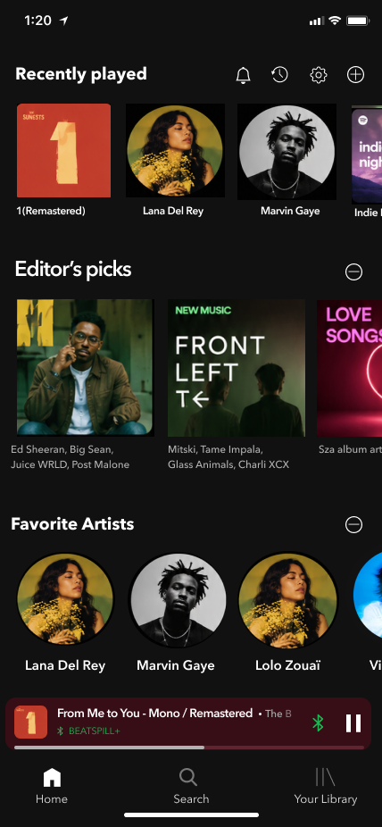
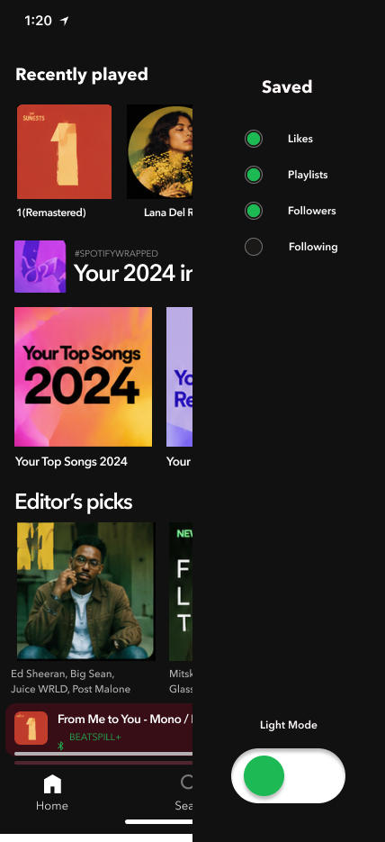
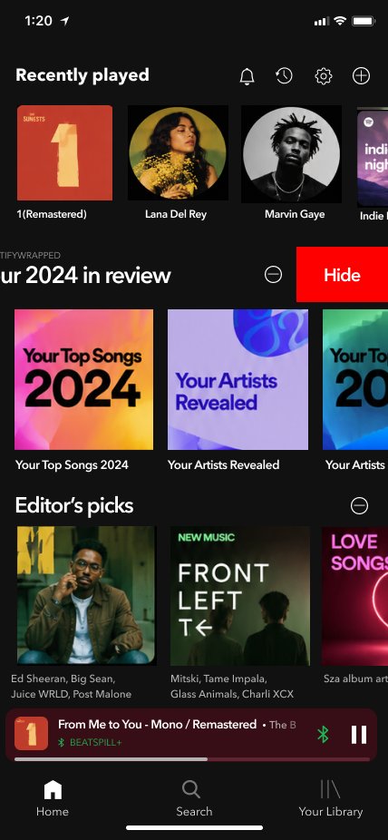
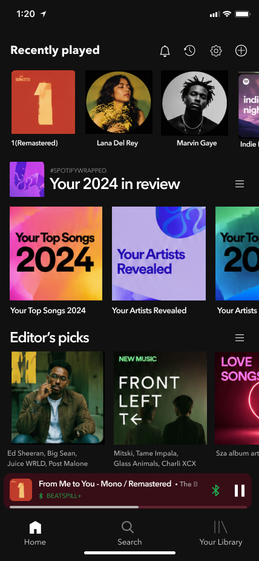
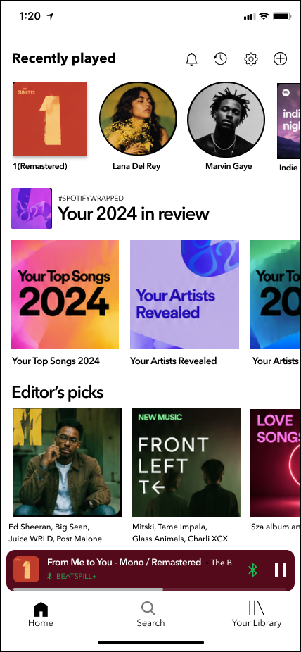

Everyone uses Spotify differently, so why does everyone get the same home screen? A redesign that puts users in charge of what they see.
I've used Spotify for years, but I don't listen to podcasts or audiobooks, so my home screen felt cluttered with recommendations I never touch.
A friend told me they listen to podcasts constantly, especially at the gym. Same app, completely different use.
People already know what they like. The app should bend to that.
The home screen should be a record of how someone listens. Right now it is a record of what the algorithm wants to promote.
Hiding a section or switching modes should never feel risky to try.
New customization should sit inside patterns people already know from using Spotify for years.
What feels intuitive to a designer isn't always intuitive to a tester, so nothing shipped unvalidated.
Turn podcasts, audiobooks, or any section on or off entirely.
Drag sections up so what matters most shows up first.
A visual option for the people who just don't want dark mode.
Spotify's own design team on why personalization matters, yet the current app still doesn't go far enough.
Good design means users understand it without effort.
His work explains why personalization and customization matter so much in an app like this.
A command-line tool people already use to re-skin and customize their Spotify client, proof that the appetite for control goes further than what the app ships with.
Same subscription model, tighter Apple ecosystem integration, better audio quality.
Personalized recommendations too, but bundles in video content alongside audio.
Fall 2024 – Feb/Mar
Click a name to see that persona.
"I need an app that shows me the content I actually use, and is simple, easy, and personalized for me."
"Why is this the one app that won't just match everything else I use?"
"That's all I use the app for, so why am I forced to look at the rest?"
"That's all I use the app for.
So why am I forced to
look at the rest?"
David's home screen feels overwhelmed by features he never uses.
He opens customization to control what shows up.
Hides podcasts and audiobooks, switches to light mode.
Reorganizes so his most-used music appears first.
Confirms the layout feels like it's actually his.
Opens the app and starts listening in seconds, not minutes.
Spotify's dark palette already existed, so I sampled it rather than invent it. Light mode didn't exist on mobile, so those values are mine, held to the same rule the dark ones follow.
57.6% dark, 55.3% light. One color holds over half of either screen. Both themes lean on a single dominant surface to the same degree.
The green doesn't survive the switch. It clears AA comfortably on near-black and fails it on white, so in light mode it can't be text or an icon. It has to become a filled shape with dark type on top (8.12:1). That constraint only shows up if you build both themes instead of inverting one.
Click a name to see that task flow.
Task: David is trying to minimize clutter. If he doesn't use a feature, he doesn't want to see it.
Opens home screen, sees too much unused content.
Taps the customize control on a section.
Hides the sections he never uses.
Drags his most-used section to the top.
Measurable outcome: did he build his layout successfully, faster and with less frustration than the default?
Task: Craig wants the app to finally match every other light-mode app on his phone.
Opens Settings, looking for a light mode toggle.
Finds it clearly labeled instead of guessing at an icon.
Switches the whole app to light mode in one tap.
Home screen now matches everything else he uses.
Why it matters: Craig wants the same screen every morning. Consistency is the feature.
Task: Audrey only uses Spotify for music, and wants the app to admit that.
Opens customization, sees every section listed.
Hides podcasts and audiobooks she's never opened.
Reorders so her own playlists appear first.
Opens the app to music she actually chose, nothing else.
Why it matters: Audrey finds plenty on her own. What tires her is everything else she gets handed.
Every control sits on the screen you are already looking at, and the panel only opens when you want to change what is on it.

01 02 03 Closed
04 05 Open3 testers (Kathy, Isabella, Xally), over FaceTime, completing tasks like turning off podcasts, dragging sections, and switching to light mode.

Round 1 Final ↔Drag to swap the panel for the in-place control
Round 1 kept the controls in a panel. Testers reached for the section itself first, so the control moved to where they were already looking.

Drag to swap the icon on the same screen
Round 2 put a menu icon on every section header. Testers read it as something to grab and drag, not something that removes, so the icon changed to match what it actually does.

Drag to switch the theme
Light mode is a preference. Both themes run on the same structure, so nothing moves when you switch. Only the surface changes.
A fully customizable home screen: toggle off content you don't care about, drag-and-drop what matters to the top, switch between light and dark mode. A companion motion graphic walks through each interaction step by step.
Open full prototype in Figma →Redesigning something this well known is a constraint exercise, not a blank page. Most of the system was handed to me and locked. My job was to decide what could be added without the result stopping feeling like Spotify.
Personalization isn't just better recommendations.
It's giving people control over what they don't want.
People really do want to customize their home screen and hide what they don't use, though not everyone who says they want a feature will end up using it.
The best playlist is still the one that feels like yours.